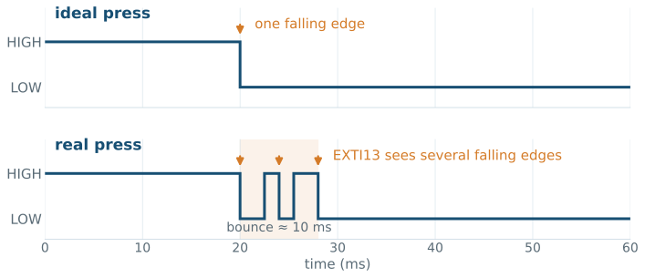

EE5203 Microprocessors
L06 - GPIO Interrupts
From polling to interrupts
while (1) {
GPIO_PinState button =
HAL_GPIO_ReadPin(GPIOC, GPIO_PIN_13);
if (button == GPIO_PIN_RESET) {
HAL_GPIO_WritePin(GPIOA, GPIO_PIN_5,
GPIO_PIN_SET);
} else {
HAL_GPIO_WritePin(GPIOA, GPIO_PIN_5,
GPIO_PIN_RESET);
}
}This is the Week 5 program. The loop checks PC13 repeatedly—even when the button has not changed.
Polling asks, “Did it happen yet?” again and again.
L05 exit ticket - the answers
01 REGISTER — PC13’s MODER bits 27:26 = 00 and PUPDR bits 27:26 = 00.
02 POINTER — the function reads your members through the address; no copy is made.
03 LOGIC — GPIO_PIN_RESET: pressing grounds PC13; the external pull-up holds it high only while released.
04 EVIDENCE — the SFR view: both PC13 fields read 00 (and IDR bit 13 follows the physical button).
And today, that polling loop above stops asking — the button will tell us.
What is an interrupt?
When B1 is pressed, hardware asks the processor to pause its current work and run a specific function.
After that function finishes, the processor resumes the interrupted work—exactly as you answer a call and then return to what you were doing.
An interrupt changes how the program learns that an event happened.
The five-stage interrupt path
The next slides walk this path one stage at a time—the strip at the top shows where we are. After we reach “run your code,” we build it for real.
Today’s interrupt vocabulary
01 Explain what EXTI, NVIC, a vector table, a handler, and a callback do.
02 Configure B1 for the correct falling-edge interrupt.
03 Trace one press from PC13 to your callback.
04 Pass the event to main() using a shared variable.
05 Filter the extra edges caused by switch bounce.
B1 is active-low
PRESS PC13→ NOTICE→ ASK→ LOOK UP→ RUN YOUR CODE

B1 RELEASED
- PC13 is high — the input reads
GPIO_PIN_SET.
B1 PRESSED
- B1 connects PC13 to ground — the input reads
GPIO_PIN_RESET.
The falling edge
PRESS falling edge→ NOTICE→ ASK→ LOOK UP→ RUN YOUR CODE
| Action | Voltage change | Edge name |
|---|---|---|
| press B1 | high → low | falling edge |
| release B1 | low → high | rising edge |
released press held release
HIGH ───────────┐ ┌────────
└──────────────────────┘ LOW
↓ falling edge ↑ rising edgeWe want one event when the student presses B1, so we select the falling edge.
EXTI edge detection
PRESS→ NOTICE EXTI→ ASK→ LOOK UP→ RUN YOUR CODE
EXTI means External Interrupt/Event Controller.
For this course, think of EXTI as a set of hardware edge detectors:
01 It watches the selected input line.
02 It compares the new level with the previous level.
03 It reacts when the selected rising or falling edge occurs.
EXTI runs independently of the while (1) loop.
Deep dive: RM0368 Rev 6, §10 EXTI — p. 205.
Pin numbers and EXTI lines
PRESS→ NOTICE EXTI13→ ASK→ LOOK UP→ RUN YOUR CODE
Every GPIO pin number has a matching EXTI line:
| GPIO pin | Matching EXTI line |
|---|---|
| PA0, PB0, PC0, … | EXTI0 |
| PA5, PB5, PC5, … | EXTI5 |
| PA13, PB13, PC13, … | EXTI13 |
B1 uses PC13, so CubeMX routes PC13 to EXTI13.
The next slide shows the register that stores this routing choice.
Routing PC13 to EXTI13
PRESS→ NOTICE SYSCFG→ ASK→ LOOK UP→ RUN YOUR CODE
EXTI13 could watch PA13, PB13, or PC13—but only one of them at a time.
A four-bit field inside SYSCFG->EXTICR[3] stores the selection:
| Field value | Port connected to EXTI13 |
|---|---|
0000 |
PA13 |
0001 |
PB13 |
0010 |
PC13 — our configuration |
HAL_GPIO_Init(GPIOC, …) writes this field for us—and this register is why only one port can use a given EXTI line at a time.
Deep dive: RM0368 Rev 6, SYSCFG_EXTICR4 — p. 143.
The EXTI pending bit
PRESS→ NOTICE pending bit→ ASK→ LOOK UP→ RUN YOUR CODE
When EXTI13 detects the falling edge, it sets a pending bit:
| Pending bit | Meaning |
|---|---|
0 |
no unhandled edge is waiting |
1 |
an edge occurred and still needs service |
The pending bit is one bit inside the EXTI hardware. It remembers the event until the handler clears it.
STM32 documentation also says pending flag; we say pending bit.
EXTI configuration registers
PRESS→ NOTICE EXTI registers→ ASK→ LOOK UP→ RUN YOUR CODE
| Register | Bit 13 = 1 means | Who writes it |
|---|---|---|
EXTI->IMR |
line 13 may raise an interrupt | HAL_GPIO_Init |
EXTI->FTSR |
the falling edge is selected | HAL_GPIO_Init |
EXTI->PR |
an edge is pending (unserviced) | hardware sets it; software clears it |
The pending bit from the previous slide lives in EXTI->PR.
EXTI->PR is cleared by writing 1 to the bit—writing 0 changes nothing. This rule is called write-1-to-clear.
IRQ delivery through the NVIC
PRESS→ NOTICE→ ASK IRQ → NVIC→ LOOK UP→ RUN YOUR CODE
After the edge, EXTI sends an IRQ—an Interrupt Request: “Processor, this hardware event needs attention.” Names ending in IRQn, such as EXTI15_10_IRQn, identify one particular request.
The request does not run our code by itself. It first goes to the NVIC—the Nested Vectored Interrupt Controller—whose immediate jobs are straightforward:
01 ENABLE: allow or block each interrupt request.
02 PRIORITY: decide which request runs first if several are waiting.
03 DELIVER: present the accepted request to the processor.
“Nested” matters when one interrupt interrupts another. We will not use nesting this week.
The shared EXTI15_10 request
PRESS→ NOTICE→ ASK EXTI15_10_IRQn→ LOOK UP→ RUN YOUR CODE
The active path is PC13 → EXTI13 → the shared request → NVIC.
Deep dive: PM0214 Rev 10, §4.2 NVIC — p. 208.
Choosing a function to run
PRESS→ NOTICE→ ASK→ LOOK UP vector table→ RUN YOUR CODE
The processor receives an interrupt number—not a C function name.
It therefore needs a stored mapping:
| Interrupt | Function address |
|---|---|
| reset | address of Reset_Handler |
| system tick | address of SysTick_Handler |
| EXTI lines 10–15 | address of EXTI15_10_IRQHandler |
This mapping is called the vector table.
Deep dive: PM0214 Rev 10, §2.3.4 Vector table — p. 40.
The vector table
PRESS→ NOTICE→ ASK→ LOOK UP startup file→ RUN YOUR CODE
Vector table = a table in memory that tells the processor which function handles each interrupt.
The startup file is an STM32-supplied file that runs before main(). It creates this table.
We do not edit the table in this lab. We use the handler name expected by the startup file:
“Vectored” in NVIC means that the correct handler is selected through this table.
The IRQ handler
PRESS→ NOTICE→ ASK→ LOOK UP→ RUN YOUR CODE handler
The interrupt handler is connected to the vector table.
The processor enters this function automatically when it accepts the request.
We do not call EXTI15_10_IRQHandler() from main().
The HAL interrupt helper
PRESS→ NOTICE→ ASK→ LOOK UP→ RUN YOUR CODE HAL helper
The generated handler calls:
This HAL function performs two jobs:
01 Clear the EXTI13 pending bit so the same request is not handled again.
02 Call HAL_GPIO_EXTI_Callback(GPIO_PIN_13) so our application can respond.
Deep dive: UM1725 Rev 8, GPIO functions — p. 447 · the ~10-line source in stm32f4xx_hal_gpio.c.
The HAL callback
PRESS→ NOTICE→ ASK→ LOOK UP→ RUN YOUR CODE callback
void HAL_GPIO_EXTI_Callback(uint16_t GPIO_Pin)
{
if (GPIO_Pin == GPIO_PIN_13) {
button_event = 1;
}
}We write the callback, but HAL decides when to call it.
The parameter tells us which GPIO pin produced the event.
uint16_t is the fixed-width type from <stdint.h> used in the C weeks: exactly 16 unsigned bits—one bit per pin of a GPIO port.
The complete interrupt path
PRESS → NOTICE → ASK → LOOK UP → RUN YOUR CODE — now with the real STM32 names.
The interrupt detour
while (1){ instruction_A(); instruction_B(); // interrupt arrives here instruction_C(); // execution resumes here instruction_D();}main().
Deep dive—what the “save return address” step really does (register stacking, exception entry and return): PM0214 Rev 10, §2.3 Exception model — p. 37 · where the vector table itself comes from: From C to Silicon, §4 Before main.
CubeMX interrupt setup
For B1, make three choices:
01 Click PC13 and select GPIO_EXTI13.
02 Select falling-edge interrupt mode and no internal pull.
03 Enable EXTI line[15:10] interrupts in the NVIC settings.
CubeMX generates the GPIO, EXTI, NVIC, and handler code. The supplied startup file already contains the vector-table entry.
Generated initialization code
The important generated lines are:
GPIO_InitStruct.Pin = GPIO_PIN_13;
GPIO_InitStruct.Mode = GPIO_MODE_IT_FALLING;
GPIO_InitStruct.Pull = GPIO_NOPULL;
HAL_GPIO_Init(GPIOC, &GPIO_InitStruct);
HAL_NVIC_SetPriority(EXTI15_10_IRQn, 0, 0);
HAL_NVIC_EnableIRQ(EXTI15_10_IRQn);HAL_GPIO_Init writes the registers we met: the SYSCFG routing field, EXTI->IMR, and EXTI->FTSR.
HAL_NVIC_EnableIRQ allows the request to reach the processor.
These are the names CubeMX generates—you will find these exact lines in your project.
First test: toggle LD2
void HAL_GPIO_EXTI_Callback(uint16_t GPIO_Pin)
{
if (GPIO_Pin == GPIO_PIN_13) {
HAL_GPIO_TogglePin(GPIOA, GPIO_PIN_5);
}
}If one press changes LD2, the complete interrupt path works.
This is a test checkpoint, not yet the best application structure.
Rules for the callback
Inside the callback:
01 Check which source caused the interrupt.
02 Record that the event happened.
03 Return quickly to the interrupted program.
Avoid HAL_Delay(), long loops, printing, or multi-step application logic inside the callback.
Hardware and software flags
The two values may both be called “flags,” but they live in different places and are cleared by different code.
The event variable
| Value | Meaning |
|---|---|
0 |
no button event is waiting |
1 |
a button event is waiting |
We use an 8-bit integer because only the values 0 and 1 are needed.
volatile and interrupts
Normally, the compiler assumes ordinary code controls when a variable changes.
Here, interrupt code can change button_event between two main-loop instructions:
volatile tells the compiler to read the stored value each time instead of relying on an old copy.
It does not make the variable a hardware register.
Deep dive: C11 draft N1570, §6.7.3 — p. 140 · M. Barr, How to Use C’s volatile Keyword.
Recording the event
void HAL_GPIO_EXTI_Callback(uint16_t GPIO_Pin)
{
if (GPIO_Pin == GPIO_PIN_13) {
button_event = 1;
}
}The callback does not toggle the LED and does not wait.
It only reports: “B1 was pressed.”
Consuming the event
Reset the variable before performing the application action.
The main loop is no longer polling PC13. It is checking a software event produced by the interrupt.
Callback vs. main loop
Button bounce
A mechanical contact does not change perfectly once:

Several falling edges can set several interrupt requests.
This electrical behavior is called switch bounce.
Software debounce
uint32_t last_press_ms = 0;
void HAL_GPIO_EXTI_Callback(uint16_t GPIO_Pin)
{
uint32_t now = HAL_GetTick();
if (GPIO_Pin == GPIO_PIN_13 &&
(now - last_press_ms) >= 80) {
last_press_ms = now;
button_event = 1;
}
}HAL_GetTick() returns the milliseconds since startup as a uint32_t.
Why 80 ms? Mechanical bounce settles within about 10 ms. 80 ms safely ignores every bounce edge but is still shorter than a fast intentional double press.
The 10 ms figure comes from measured data: J. Ganssle, A Guide to Debouncing.
Debugging register values
The SFR (Special Function Registers) view — VS Code’s PERIPHERALS panel — shows the live values:
| Stage to verify | Register evidence |
|---|---|
| PC13 is routed to EXTI13 | SYSCFG->EXTICR[3] field for line 13 = 0010 |
| the falling edge is selected | EXTI->FTSR bit 13 = 1 |
| line 13 may raise an interrupt | EXTI->IMR bit 13 = 1 |
| an edge is waiting for service | EXTI->PR bit 13 = 1 while paused in the handler |
A breakpoint inside EXTI15_10_IRQHandler freezes the processor before the HAL helper runs—so EXTI->PR bit 13 still reads 1 there.
Register definitions: RM0368 Rev 6, EXTI_PR — p. 211.
Debugging the interrupt path
01 Confirm PC13 is high when released and low when pressed.
02 Confirm GPIO_EXTI13 and falling-edge mode.
03 Confirm EXTI15_10_IRQn is enabled.
04 Break inside EXTI15_10_IRQHandler and check EXTI->PR bit 13 in the SFR view.
05 Break inside HAL_GPIO_EXTI_Callback.
06 Watch button_event and last_press_ms.
Stop at the first stage that does not behave as expected.
Common interrupt mistakes
01 WRONG EDGE: rising selected instead of falling.
02 WRONG PULL: an internal setting conflicts with the board circuit.
03 NVIC DISABLED: EXTI notices the edge, but the request is blocked.
04 WRONG PIN CHECK: callback compares with another pin mask.
05 LONG CALLBACK: delay or application logic blocks other work.
06 NO DEBOUNCE: one press appears as several events.
Laboratory mission
Replace Week 5 polling with a PC13 falling-edge interrupt and produce one LD2 change per press.
- configure PC13 and enable the correct NVIC request;
- prove that the generated handler and callback run;
- pass the event to
main()withbutton_event; - add the 80 ms debounce check.
Exit ticket
01 EXTI: what does it detect and remember?
02 NVIC: what does enabling an IRQ allow?
03 VECTOR TABLE: what information does it store?
04 HANDLER / CALLBACK: which does the processor enter; which does HAL call?
05 TWO BITS: EXTI pending bit vs button_event — the difference?
Scan before you leave — ungraded; your answers open the next lecture.
Every concept in this lecture, with page-linked sources: academic references.
EE5203 - L06